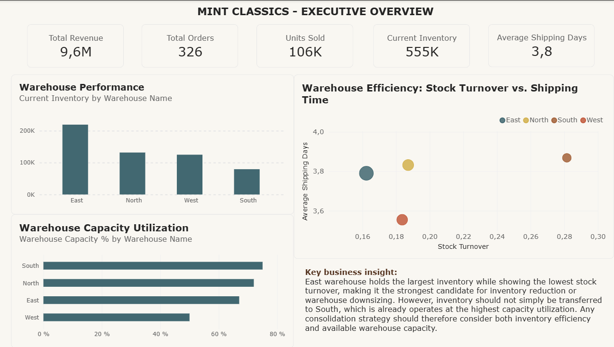

SQL | Power BI
This project analyzes a relational database for Mint Classics, a fictional retailer of classic model cars, to support a data-driven business decision about potential warehouse closure or downsizing while maintaining efficient inventory management and timely customer service. Using MySQL Workbench, I explored nine interconnected tables and developed SQL queries to investigate customer purchasing behavior, sales performance, product demand, inventory levels, and warehouse operations. I performed exploratory data analysis (EDA) to understand the database structure, examine relationships across tables, and identify patterns relevant to the business problem. I then connected the database to Power BI to visualize key findings, including customer and product demand, inventory levels, stock turnover, warehouse capacity, and shipping performance. The analysis ultimately provided recommendations for inventory optimization and warehouse consolidation, with the East warehouse identified as the strongest candidate for closure or downsizing while considering stock redistribution and delivery efficiency.
Using Power BI, I built an interactive, four-page dashboard covering executive KPIs, sales and customer performance, product inventory and turnover, and warehouse optimization. The dashboard brings together revenue, order volume, inventory, stock turnover, shipping time, and warehouse capacity to compare operational performance and identify areas for further investigation. This dashboard demonstrates how SQL-based exploratory analysis and Power BI reporting together can turn a relational database into actionable business insights.

This article documents the exploratory data analysis (EDA) process behind the Mint Classics project. I examined the structure of the nine-table relational database and used SQL queries to investigate relationships between customers, orders, and products.
The analysis explored how many products could appear in a single order, whether customers placed multiple orders on the same day, how many distinct orders customers placed, how product prices varied between transactions, and which products and customers had the highest demand. I used Power BI to visualize selected findings.
The article illustrates my approach to understanding an unfamiliar dataset, formulating analytical questions, and using SQL to extract meaningful insights before addressing a broader business problem.
This project investigates data quality in the Legal Entity Identifier (LEI) records from the Global Legal Entity Identifier Foundation (GLEIF), which contains information about legal entities and their associated registration and validation authorities.
I used Pandas to prepare, clean, and process the data for analysis. I then performed statistical analysis of Registration Authority (RA) and Validation Authority (VA) codes in relation to jurisdiction and Managing LOU. I examined patterns in authority-code usage to identify unusual observations for further investigation and also analyzed the relationships between RA and VA fields to assess whether they referred to the same authority.
Rather than treating every statistical outlier as an error, I manually reviewed flagged records to assess potential data-quality issues. This project demonstrates a data-analysis workflow that combines data preparation, statistical exploration, anomaly detection, and human validation to investigate inconsistencies in a real-world financial dataset.
In this project, I developed an exploratory data analysis and data preprocessing pipeline focusing on public job vacancy dataset to evaluate labor market demand trends across municipalities. I built robust Python workflows utilizing Pandas and NumPy to handle structural data issues, such as hidden whitespace in column headers, and to isolate and clean null values across multilingual text fields. By leveraging grouping and aggregation functions (groupby, count), I examined job title distributions, frequency patterns, and publication-date timelines for targeted geographic regions like Brussels. To effectively communicate the findings, I created multi-variable visualizations using Seaborn and Matplotlib, featuring bar charts that highlighted job title frequencies and time-series plots analyzing publication trends over time. The resulting cleaned datasets and visual insights provide a clear framework for assessing regional labor demand.
This ongoing project explores how data analysis can support a business model designed to prevent food waste by connecting surplus food with potential buyers. Inspired by the Too Good To Go concept, the project focuses on using data to inform business decisions rather than simply describing the scale of food waste across Europe.
I began by collecting international and European data sources relevant to food waste and surplus-food activities. I created a MySQL database and imported Eurostat data, then prepared a cleaned table by standardizing column names and removing columns with constant values.
The next stage is to use SQL to investigate patterns in the available data and identify findings that could inform the design of a food-surplus marketplace. I plan to use Power BI to present the analysis through a dashboard and communicate the findings visually.
The project connects data preparation and SQL analysis with a practical business question: how can data help inform decisions in a marketplace intended to reduce avoidable food waste?